Ключевая разница между программой, написанной с структурном стиле, и объектно-ориентированной программой: в структурном стиле на первый план выходит логика, понимание последовательности выполнения действий для достижения поставленной цели. у объектно-ориентированной – важнее представить программу как систему взаимодействующих объектов.
Объектно-ориентированное программирование (ООП) — это способ организации программы, позволяющей использовать один и тот же код многократно. В отличие от функций и модулей, ООП позволяет не только разделить программу на фрагменты, но и описать предметы реального мира в виде удобных сущностей – объектов, а также организовать связи между этими объектами.
Объектно-ориентированное программирование (ООП) — парадигма программирования, в которой основными концепциями являются понятия объектов и классов.
Основным «кирпичиком» ООП является класс – сложный тип данных, включающий набор переменных и функций для управления значениями, хранящимися в этих переменных. переменные называют атрибутами или свойствами, а функции методами.
Класс — тип, описывающий устройство объектов. Класс — это шаблон, в котором описаны все свойства будущего объекта и его методы.
Иначе, класс – это способ описания сущности, определяющий состояние и поведение, зависящее от этого состояния, а также правила для взаимодействия с данной сущностью (контракт).
С точки зрения программирования класс можно рассматривать как набор данных (полей, атрибутов, членов класса) и функций для работы с ними (методов).
С точки зрения структуры программы, класс является сложным типом данных.
Класс является фабрикой объектов, т.е. позволяет создать неограниченное количество экземпляров, основанных на этом классе.
Объект (экземпляр) – это отдельный представитель класса, имеющий конкретное состояние и поведение, полностью определяемое классом. Объект — это сущность, экземпляр класса, которой можно посылать сообщения и которая может на них реагировать, используя свои данные.
Класс описывается с помощью ключевого слова class по следующей схеме:
class <Название класса> [(<Класс1>[, …, <Класс№>])]:
[“”” Строка документирования “””]
<Описание атрибутов и методов>
Инструкция создает новый объект и присваивает ссылку на него идентификатору, указанному после ключевого слова class. Это означает, что название класса должно полностью соответствовать правилам именования переменных. После названия класса в круглых скобках можно указать один или несколько базовых классов через запятую. Если же класс не наследует базовые классы, то круглые скобки можно не указывать. Следует заметить, что все выражения внутри инструкции class выполняются при создании класса, а не его экземпляра. В качестве примера создадим класс, внутри которого просто выводится сообщение.
class MyClass:
''' Это строка документирования '''
print ('инструкции выполняются сразу')
input()
Этот пример содержит лишь определение класса и не создает экземпляр класса. Как только поток выполнения достигнет инструкции class, сообщение будет сразу выведено.
Объект создается путем вызова класса по его имени. При этом после имени класса обязательно ставятся скобки:
ИмяКласса()
Поскольку в программном коде важно не потерять ссылку на только что созданный объект, то обычно его связывают с переменной. Поэтому создание объекта чаще всего выглядит так:
имя_переменной = ИмяКласса()
В последствии к объекту обращаются через связанную с ним переменную. Пример "пустого" класса и двух созданных на его основе объектов:
>>> class A:
... pass
...
>>> a = A()
>>>
b = A()
Создание атрибута класса аналогично созданию обычной переменной. Метод внутри класса создается так же, как и обычная функция, - с помощью инструкции def.
!!! Методам класса в первом параметре, который обязательно следует указывать явно, автоматически передается ссылка на экземпляр класса. Общепринято этот параметр называть именем self.
Доступ к атрибутам и методам класса внутри определяемого метода производится через переменную self с помощью точечной нотации – к атрибуту х из метода класса можно обратиться так: self.x.
Чтобы использовать атрибуты и методы класса, необходимо создать экземпляр класса согласно следующему синтаксису:
<Экземпляр класса> = <Название класса>([<Параметры>])
При обращении к методам класса используется такой формат:
<Экземпляр класса>.<Имя метода>([<Параметры>])
Обратите внимание на то, что при вызове метода не нужно передавать ссылку на экземпляр класса в качестве параметра, как это делается в определении метода внутри класса. Ссылку на экземпляр класса интерпретатор передает автоматически.
Обращение к атрибутам класса осуществляется аналогично:
<Экземпляр класса>.<Имя атрибута>
Объект имеет конкретные значения атрибутов и методы, работающие с этими значениями на основе правил, заданных в классе.
Что такое класс или тип? Проведем аналогию с реальным миром. Если мы возьмем конкретный стол, то это объект, но не класс. А вот общее представление о столах, их назначении – это класс. Ему принадлежат все реальные объекты столов, какими бы они ни были. Класс столов дает общую характеристику всем столам в мире, он их обобщает. Тип Int – это класс целых чисел. Числа 5, 207 и т.д. – это конкретные объекты этого класса.
В языке программирования Python объекты принято называть также экземплярами. Это связано с тем, что в нем все классы сами являются объектами класса type. Точно также как все модули являются объектами класса module.
Классы обычно помещают в модули. Каждый модуль может содержать несколько классов. В свою очередь модули могут объединяться в пакеты. Благодаря пакетам в Python организуются пространства имен.
Интерфейс – это набор методов класса, доступных для использования другими классами.
Очевидно, что интерфейсом класса будет являться набор всех его публичных методов в совокупности с набором публичных атрибутов. По сути, интерфейс чётко определяет все возможные действия над классом.
Пример интерфейса - приборная панель автомобиля, которая позволяет вызвать такие методы, как увеличение скорости, торможение, поворот, переключение передач, включение фар, и т.п. То есть все действия, которые может осуществить другой класс (например, – водитель) при взаимодействии с автомобилем.
Python соответствует принципам объектно-ориентированного программирования. В Python всё является объектами - и строки, и списки, и словари, и всё остальное. Программист может написать свой тип данных (класс), определить в нём свои методы. ООП полезно при долгосрочной разработке программы несколькими людьми, так как упрощает понимание кода.
Пример определения собственного класса:
>>> # Пример простейшего класса, который ничего не делает
... class A:
... pass
Теперь мы можем создать несколько экземпляров этого класса:
>>> a = A()
>>> b = A()
>>> a.arg = 1 # у экземпляра a появился атрибут arg, равный 1
>>> b.arg = 2 # а у экземпляра b - атрибут arg, равный 2
>>> print(a.arg)
1
>>> print(b.arg)
2
>>> c = A()
>>> print(c.arg) # а у этого экземпляра нет arg получим сообщ. об ошибке
Traceback (most recent call last):
File "<stdin>", line 1, in <module>
AttributeError: 'A' object has no attribute 'arg'
Классу возможно задать собственные методы:
>>> class A:
... def g(self): # self - обязательный аргумент, содержащий в себе #экземпляр класса, передающийся при вызове метода, поэтому этот аргумент #должен присутствовать во всех методах класса.
... return 'hello world'
...
>>> a = A()
>>> a.g()
'hello world'
Пример:
>>>
>>> class B:
... arg = 'Python' # Все экземпляры этого класса будут иметь атрибут arg,
... # равный "Python"
... # Но впоследствии мы его можем изменить
... def g(self):
... return self.arg
...
>>> b = B()
>>> b.g()
'Python'
>>> B.g(b)
'Python'
>>> b.arg = 'spam'
>>> b.g()
'spam'
!!! Все атрибуты класса являются открытыми (public), т.е. доступными для непосредственного изменения как из самого класса, так и из других классов и из основного кода программы.
Кроме того, атрибуты допускается создавать динамически после создания класса – можно создать как атрибут объекта класса, так и атрибут экземпляра класса. Например:
class A: # определим пустой класс
pass
A.x = 50 # создадим атрибут объекта класса
c1, c2 = A(), A() # создадим 2 экземпляра класса
c1.y = 10 # создаем атрибут экземпляра класса
c2.y = 20 # создаем атрибут экземпляра класса
print(с1.x, c1.y) # выведет 50, 10
print(с2.x, c2.y) # выведет 50, 20
В этом примере мы определяем пустой класс, разместив в нем оператор pass. Далее следует атрибут класса х. Этот атрибут доступен всем создаваемым экземплярам класса. Затем создаем два экземпляра класса и добавляем одноименные атрибуты: y. Значения этих атрибутов будут разными в каждом экземпляре класса.
!!! Очень важно понимать разницу между атрибутами объекта класса и атрибутами экземпляра класса. Атрибут объекта класса доступен всем экземплярам класса, и после изменения атрибута значение изменится во всех экземплярах класса. Атрибут экземпляра класса может хранить уникальное значение для каждого экземпляра, и изменение его в одном экземпляре класса не затронет значения одноименного атрибута в других экземплярах. Например:
>>> class MyClass:
x = 10 # атрибут объекта класса
def _init_(self):
self.y = 20 # атрибут экземпляра класса
Теперь создадим два экземпляра этого класса
>>> c1 = MyClass() # создаем экземпляр класса
>>> c2 = MyClass() # создаем экземпляр класса
Выведем значение атрибута х, а затем изменим значение и опять произведем вывод:
>>> print (c1.x, c2.x) # 10 10
>>> MyClass.x = 88 # Изменяем атрибут объекта класса
>>> print (c1.x, c2.x) # 88 88
Видим, что изменение атрибута объекта класса затронуло значение в двух экземплярах класса сразу. Теперь произведем аналогичную операцию с атрибутом y.
>>> print (c1.y, c2.y) # 20 20
>>> c1.y = 88 # Изменяем атрибут экземпляра класса
>>> print (c1.y, c2.y) # 88 20
Изменилось значение атрибута только в экземпляре с1.
Следует также учитывать, что в одном классе могут существовать одновременно атрибут объекта и атрибут экземпляра с одним именем. Изменение атрибута объекта класса мы производили так:
>>> MyClass.x = 88 # Изменяем атрибут объекта класса
Если после этой инструкции вставить инструкцию
>>> c1.х = 200 # Изменяем атрибут экземпляра класса
то будет создан атрибут экземпляра класса, а не изменено значение атрибута объекта класса. Чтобы увидеть разницу выведем значения атрибутов:
>>> print (c1.х, MyClass.x) # 200 88
Взаимодействие объектов
Каждый объект «закрыт» в том смысле, что его внутреннее устройство другим объектам неизвестно. Но объекты могут обмениваться данными с другими объектами, используя заранее согласованные каналы связи. Для решения задач на «верхнем уровне» достаточно определить что делает тот или иной объект, не заботясь о том, как он это делает. Таким образом, для преодоления сложности мы используем абстракцию, т.е. сознательно отбрасываем второстепенные детали.
Но важно, что объект сам работает со своими внутренними данными, не допуская к ним другие объекты. Таким образом, данные и методы объединены - вместе они образуют объект. Объектный подход – это декомпозиция задачи на объекты.
|
Объект – это данные плюс методы их обработки. |
Объектом можно назвать то, что имеет четкие границы и обладает состоянием и поведением.
|
Состояние объекта – это набор его свойств и текущее значение этих свойств |
Например, автомобиль имеет свойства «масса», «скорость», «цвет»; их значения в какой-то момент могут быть равны 1510 кг, 60 км/час, «синий».
Поведение объекта «автомобиль»: автомобиль движется, если водитель нажимает на педаль газа, при столкновении с другими объектами он может повредить их или разрушиться сам.
Состояние объекта определяет его возможное поведение, например, лежачий человек не может прыгнуть, незаряженное ружье не выстрелит.
Если в решаемой задаче объекты – автомобили, их может быть много и, с точки зрения задачи, их свойства общие. Поэтому нет смысла описывать отдельно каждый автомобиль: достаточно один раз определить общие черты автомобилей. Для этого в ООП используют термин класс.
|
Класс – это описание множества объектов, имеющих общий набор свойств и общее поведение. |
Класс выполняет роль чертежа или шаблона – по нему можно построить сколько угодно одинаковых объектов.
Используя объектный подход, сначала мы должны построить объектную модель задачи - выделить объекты и определить правила обмена данными между ними. После этого можно поручить разработку модели каждого объекта отдельному программисту. Программисту нужно строго соблюдать соглашения о способе обмена данными – интерфейсе – «своего» объекта с другими.
|
Программирование, основанное на моделировании задачи реального мира как множества взаимодействующих объектов, называют ООП. |
Для того, чтобы построить объектно-ориентированную модель, нужно:
− выделить взаимодействующие объекты, с помощью которых можно описать поведение моделируемой системы:
− определить их свойства, существенные в данной задаче:
− описать поведение (возможные действия) объектов, т.е. команды, которые объекты могут выполнить.
Этап разработки модели, на котором решаются перечисленные задачи, называют объектно-ориентированным анализом (ООА).
Применим объектно-ориентированный подход к разработке конкретной программы.
Рассмотрим такую задачу: составить программу для моделирования управляющих схем, построенных на логических элементах. Нам нужно «собрать» заданную схему и построить ее таблицу истинности. Как вы уже знаете, перед тем, как программировать, нужно выполнить объектно-ориентированный анализ. Все объекты, из которых состоит схема – это логические элементы, однако они могут быть разными («НЕ», «И», «ИЛИ» и другие). Попробуем выделить общие свойства и методы всех логических элементов. Ограничимся только элементами, у которых один или два входа. Тогда иерархия классов может выглядеть, например, так:
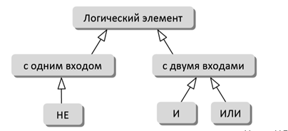
Среди всех элементов с двумя входами мы показали только элементы «И» и «ИЛИ», остальные вы можете добавить самостоятельно.
Классы и объекты в программе
Программа, использующая объектно-ориентированный подход, начинается с описания классов объектов.
Класс – это новый тип данных, который вводит программист. Класс может объединять данные различных типов в единый блок. Класс содержит описания методов работы со своими данными. Свойства описывают состояние объектов данного класса, а методы – их поведение.
Итак, для того, чтобы не описывать несколько раз одно и то же, классы в программе должны быть построены в виде иерархии. Теперь можно дать классическое определение объектно-ориентированного программирования:
Класс Б является наследником класса А, если можно сказать, что Б – это разновидность А.
Объектно-ориентированное программирование – это такой подход к программированию, при котором программа представляет собой множество взаимодействующих объектов, каждый из которых является экземпляром определенного класса, а классы образуют иерархию наследования.
Базовый класс
Построим первый вариант описания класса Логический элемент TLogElement. Обозначим его входы как In1 и In2, а выход назовем Res (от англ. result – результат). Здесь состояние логического элемента определяется тремя величинами (In1, In2 и Res). С помощью такого базового класса можно моделировать не только статические элементы (как «НЕ», «И», «ИЛИ» и т.п.), но и элементы с памятью (например, триггеры).
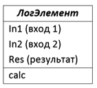
Чтобы создать объект класса TLogElement, нужно вызвать специальную функцию без параметров, имя которой совпадает с именем класса:
elem = TLogElement()
Созданный объект elem относится к классу TLogElement, поэтому его называют экземпляром класса TLogElement или объектом класса TLogElement.
Свойства хранятся в переменных, принадлежащих объекту. Для сохранения значений входов и запоминания выхода введём три поля, принимающих логические значения.
|
Поле – это переменная, принадлежащая объекту. |
|
Поля и методы класса называются атрибутами класса. |
В любой точке программы вы можете добавить поля объектам с помощью точечной записи, например:
elem = TLogElement()
elem.in1 = True
elem.in2 = False
elem.rez = False
При таком «ручном» заполнении полей у всех объектов класса TLogElemen может оказаться разный набор полей. Интерпретатор «ругаться» не будет, но при этом могут возникнуть серьезные ошибки при выполнении программы. Чтобы этого не произошло нужно соблюдать один из главных принципов ООП: объект работает со своими данными только сам! Другие объекты (в том числе и другие процедуры и функции) могут обращаться к данным объекта ТОЛЬКО через его методы!
Внешне создание объекта, приведенное выше, выглядит как вызов функции без параметров. Действительно, здесь вызывается функция, которая создает объект. Она называется конструктором.
|
Конструктор – это метод класса, который вызывается для создания объекта этого класса. |
Мы не определили конструктор в описании класса, поэтому интерпретатор добавил его автоматически. Такой конструктор называется конструктор по умолчанию.
Если мы хотим, чтобы у всех объектов класса был одинаковый набор полей, нам нужно создать свой конструктор.
Конструктор класса имеет специальное имя __init__ (от англ. initialization – инициализация, начальные установки). По два символа подчеркивания в начале и конце говорят о том, что конструктор – это функция, имеющая специальное значение в языке.
Сейчас зададим поля в конструкторе:
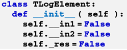
Сдвиг функции __init__ вправо делает ее частью описания класса TLogElement. Получается, что это не просто функция, а метод класса TLogElement.
Первый параметр конструктора, как и любого метода класса, - это ссылка на сам объект, который создается. Он всегда называется self (от англ. self – «сам»). С помощью этой ссылки мы обращаемся к полям объекта, например self.x означает «поле x текущего объекта». Если вместо этого написать просто x, транслятор будет считать, что речь идет о локальной или глобальной переменной, а не о поле объекта.
В нашем конструкторе создаются три поля (атрибута). Теперь любой объект класса обязательно будет иметь поля in1, in2, res.
Названия полей __in1 и __in2 начинаются с двух подчеркиваний, поэтому они будут скрытыми (доступны только внутри методов класса TLogElement). Имя поля _res начинается с одного подчёркивания, то есть оно не скрывается.
Объекты в программе для обмена данными друг с другом используют интерфейс.
|
Интерфейс – это открытые свойства и методы. |
При этом все внутренние данные и детали внутреннего устройства объекта должны быть скрыты от «внешнего мира». Такой подход позволяет:
− обезопасить внутренние данные (поля) объекта от изменений со стороны других объектов;
− проверять правильность данных, поступающих от других объектов, тем самым повышая надежность программы;
− переделывать внутреннюю структуру и код объекта любым способом, не меняя интерфейса; при этом никакой переделки других объектов не потребуется.
Это очень важно при разработке больших программ!
|
Скрытие внутреннего устройства объектов называется инкапсуляцией (помещением в капсулу). Инкапсуляцией также называют объединение в одном объекте данных и методов работы с ними. |
По умолчанию в Python все атрибуты класса (поля и методы) открытые, общедоступные (public). Это значит, что к любому полю может обратиться (и изменить его!) любая функция и объект любого класса. Для повышения надежности программы лучше сделать все поля объектов закрытыми, чтобы их не могли изменить другие объекты программы. Имена тех атрибутов, которые нужно скрыть, должны начинаться с двух знаков подчеркивания. Например:
self.__in1 = True
self.__in2 = False
Сейчас эти два поля закрытые, или частные (privat). Никакой другой объект или программа их изменить не смогут. Обратиться к ним «извне» нельзя, нельзя даже узнать их значение, это могут сделать только методы самого объекта.
self._res = False
Поле res объявим с одним знаком подчеркивания, это обозначает, что оно будет доступно «извне», но обращаться к таким полям напрямую программисту не рекомендуется!
Чтобы можно было работать со скрытым полем (читать или изменять), нужно добавить к классу два метода. Один из них будет возвращать текущее значение закрытого поля, а второй – присваивать полю новое значение.
Метод для чтения значения поля иногда называют «геттером» (get – «получать»), а метод записи нового значения – «сеттером» (set – «устанавливать»). Методам, устанавливающим новые значения полей in1 и in2, дадим имена setIn1 setIn2. При необходимости метод getRes может просто вернуть значение поля res.
Чтобы упростить запись при обращении к полям через методы, ввели понятие свойства (property). Внешне обращение к свойству выглядит также, как обращение к полю объекта. Но на самом деле при записи и чтении значения свойства вызываются методы объекта, определенные программистом.
|
Свойство – это способ доступа к внутреннему состоянию объекта, имитирующее обращение к его полю. |
Для доступа к полям введём свойства In1, In2 и Res (свойство только для чтения). Мы добавили два подчеркивания в начало названий методов setIn1 и setIn2. Следовательно, они стали частными, скрытыми от других объектов.
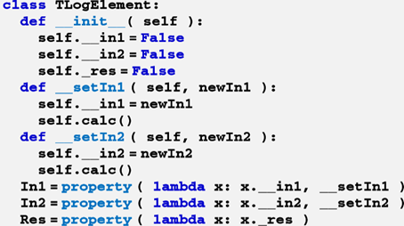
Итак, свойство (property) – это особая разновидность атрибута, который вычисляет свое значение при попытке обращения к нему.
Методы чтения для всех свойств записаны как «лямбда-функции», они выполняют прямой доступ к соответствующим полям. Лямбда-функция принимает единственный параметр – объект, который называется x, и возвращает его поле __In1 (__In2, _res).
Теперь с помощью свойств In1 и In2 другие объекты могут изменять значения входов логических элементов, с помощью свойства Res читать значение выхода логического элемента.
Таким образом, объект взаимодействует с другими объектами только с помощью своих общедоступных свойств и методов (интерфейса). Это не позволяет другим объектам напрямую менять его данные, уменьшая вероятность ошибок. При изменении полей через методы объект может проверять правильность входных данных.
Вы, наверное, заметили, что оба метода записи после присваивания нового значения входу вызывают какой-то метод calc, которого нет в описании класса. В то же время видно, что этот метод принадлежит классу, потому что перед его именем добавлена ссылка self.
Метод calc должен пересчитать значение выхода логического элемента сразу после изменения его входа. Проблема в том, что мы не можем написать метод calc, пока неизвестно, какой именно логический элемент моделируется. С другой стороны, мы знаем, что такую процедуру имеет любой логический элемент. В такой ситуации можно написать метод-«заглушку» (который ничего не делает):
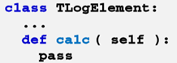
Но это не совсем правильно, поскольку кто-то может создать такой элемент и пытаться его использовать, а он не работает! Поэтому не будем его определять вообще. Такой метод называется абстрактным методом.
|
Абстрактный метод – это метод класса, который используется, но не реализуется в классе. |
Более того, не существует логического элемента «вообще», как не существует «просто фрукта», не относящегося к какому-то виду. Такой класс в ООП называется абстрактным. Его отличительная черта – хотя бы один абстрактный (нереализованный) метод.
|
Абстрактный класс – это класс, содержащий хотя бы один абстрактный метод. |
Для надёжности нужно совсем запретить создание объектов класса TLogElement, потому что это бессмысленно. Для этого в конструкторе класса определим, есть ли у объекта метод calc, и если нет – будем искусственно создавать аварийную ситуацию – исключение3:
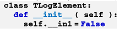
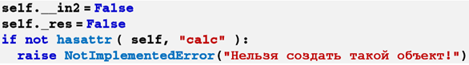
Функция hasattr возвращает логическое значение True, если у переданного ему объекта (здесь – self) есть указанное поле или метод (calc). Ключевое слово raise означает «создать исключение», тип этого исключения – NotImplementedError (ошибка «не реализовано»), в скобках записана символьная строка, которую увидит пользователь в сообщении об ошибке.
Итак, полученный класс TLogElement – это абстрактный класс. Его можно использовать только для разработки классов-наследников, создать в программе объект этого класса нельзя. Чтобы класс-наследник не был абстрактным, он должен переопределить все абстрактные методы предка, в данном случае – метод calc. Получается, что классы-наследники могут по-разному реализовать один и тот же метод. Такая возможность называется полиморфизм.
|
Полиморфизм (от греч. πολυ — много, и μορφη — форма) – это возможность классов наследников по разному реализовать метод, описанный для класса предка. |
Очевидно, что поле с именем _res, которое хранит значение выхода логического элемента, должно быть доступно классам-наследникам, которые будут изменять его в методе calc. Поэтому делать его скрытым нельзя. С другой стороны, часто используют соглашение о том, что одно подчёркивание означает специальное поле, которое не должно изменяться другими объектами и функциями.
Классы-наследники
Теперь займемся классами-наследниками от TLogElement. Поскольку у нас будет единственный элемент с одним входом («НЕ»), сделаем его наследником прямо от TLogElement (не будем вводить специальный класс «элемент с одним входом»).
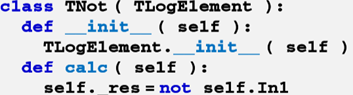
После названия нового класса TNot в скобках указано название базового класса. Все объекты класса TNot обладают всеми свойствами и методами класса TLogElement. В конструкторе класса-наследника нужно обязательно вручную вызвать конструктор класса предка. В отличие от других объектно-ориентированных языков, этот вызов автоматически не выполняется. Новый класс определяет метод calc, который записывает в поле _res инверсию входного сигнала (результат применения логической операции not). Таким образом, класс TNot уже не абстрактный, в нём все нужные методы определены. Теперь можно создавать объект этого класса TNot и использовать его:
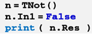
Все типы логических элементов, которые имеют два входа, будут наследниками класса
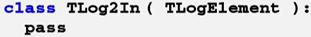
В нашем случае этот класс пустой, но если нам понадобится ввести какие-то свойства и методы, характерные для всех элементов с двумя входами, мы сможем это легко сделать в классе TLog2In. Класс TLog2In – это тоже абстрактный класс, потому что он не переопределил метод calc. Это сделают его наследники TAnd (элемент «И») и TOr (элемент «ИЛИ»), которые описывают конкретные логические элементы:
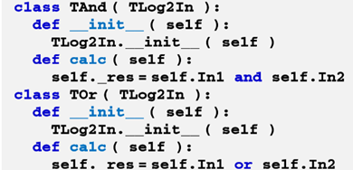
Теперь мы готовы к тому, чтобы создавать и использовать построенные логические элементы. Например, таблицу истинности для последовательного соединения элементов «И» и «НЕ» можно построить так:
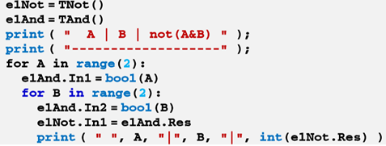
Сначала создаются два объекта – логические элементы «НЕ» (класс TNot) и «И» (класс TAnd). Далее в двойном цикле перебираются все возможные комбинации значений переменных A и B (каждая из них может быть равна 0 или 1). Они подаются на входы элемента «И», а его выход – на вход элемента «НЕ». Чтобы при выводе таблицы истинности вместо False и True выводились более компактные обозначения 0 и 1, значение выхода преобразуется к целому типу (int).
Модульность
Как вы знаете, большие программы обычно разбивают на модули – внутренне связные, но слабо связанные между собой блоки. Такой подход используется как в классическом программировании, так и в ООП. В нашей программе с логическими элементами в отдельный модуль (сохраним его в виде файла logelement.py) можно вынести всё, что относится к логическим элементам:
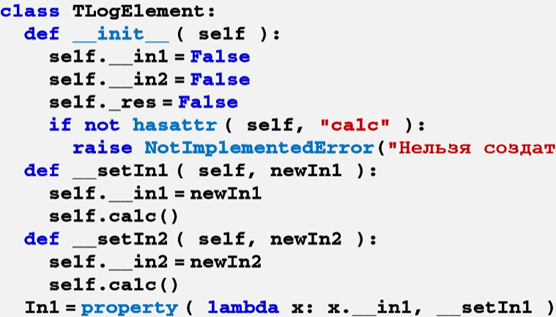
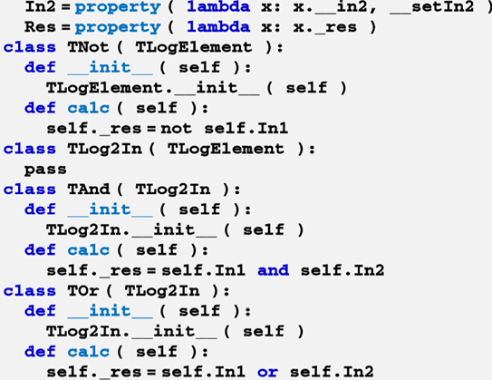
Чтобы использовать такой модуль, нужно подключить его в основной программе с помощью ключевого слова import:
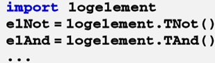
Обратите внимание, что при создании объектов нужно указывать имя модуля, где определены классы TNot и TAnd.
Сообщения между объектами
Когда логические элементы объединяются в сложную схему, желательно, чтобы передача сигналов между ними при изменении входных данных происходила автоматически. Для этого можно немного расширить базовый класс TLogElement, чтобы элементы могли передавать друг другу сообщения об изменении своего выхода. Для простоты будем считать, что выход любого логического элемента может быть подключен к любому (но только одному!) входу другого логического элемента. Добавим к описанию класса два скрытых поля и один метод:
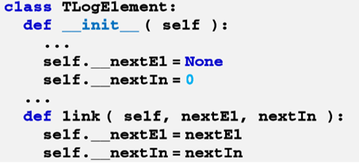
Поле __nextEl хранит ссылку на следующий логический элемент, а поле __nextIn – номер входа этого следующего элемента, к которому подключен выход данного элемента. С помощью общедоступного метода link можно связать данный элемент со следующим. Нужно немного изменить методы setIn1 и setIn2: при изменении входа они должны не только пересчитывать выход данного элемента, но и отправлять сигнал на вход следующего.
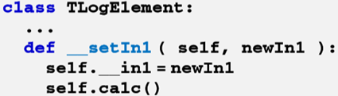
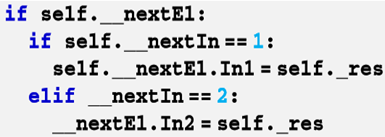
Запись «if __nextEl» означает «если следующий элемент задан». Если он не был установлен, значение поля __nextEl будет равно None, и никаких дополнительных действий не выполняется. С учетом этих изменений вывод таблицы истинности функции «И-НЕ» можно записать так (операторы вывода заменены многоточиями):
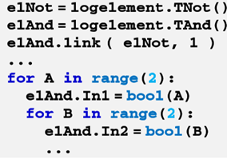
Обратите внимание, что в самом начале мы установили связь элементов «И» и «НЕ» с помощью метода link (связали выход элемента «И» с первым входом элемента «НЕ»). Далее в теле цикла обращения к элементу «НЕ» нет, потому что элемент «И» автоматически сообщит ему об изменении своего выхода.
Подведем итоги. Из предыдущих рассуждения ясно, что значительно проще не полностью описывать каждый объект «с нуля», а сравнивать его с уже известными объектами. При разработке объектно-ориентированных программ очень важно выполнить объектно-ориентированный анализ: выделить классы объектов, определить их свойства и методы. Чтобы не описывать несколько раз одинаковые свойства и методы, классы в программе должны быть построены в виде иерархии. Класс В является наследником класса Ф, если можно сказать, что В – это разновидность А.
Теперь можно дать классическое определение ООП:
|
Объектно-ориентированное программирование – это такой подход к программированию, при котором программа представляет собой множество взаимодействующих объектов, каждый из которых является экземпляром определенного класса, а классы образуют иерархию наследования. |
В наших примерах метод calc для разных классов получал новый вариант реализации. Эта особенность – проявление полиморфизма.
Следует помнить:
− При объявлении класса-наследника после имени нового класса в скобках указывают имя базового класса.
− В конструкторе класса-наследника сначало нужно вызвать конструктор базового класса.
− Чтобы класс не был абстрактным, все абстрактные методы базового класса должны быть определены.
− Переопределение метода – это создание в классе-наследнике новой версии метода, определенного ранее для базового класса.
− Ссылки на объекты разных классов можно хранить в одном массиве.Если, например, для каждого элемента массива вызвать метод calc, программа определит тип конкретного объекта и вызовет метод того класса, к которому этот объект принадлежит. Эта особенность – проявление полиморфизма.